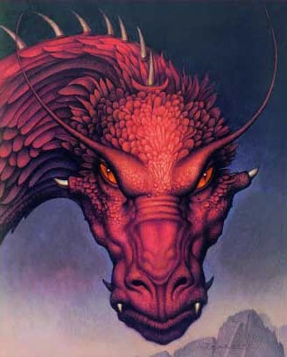
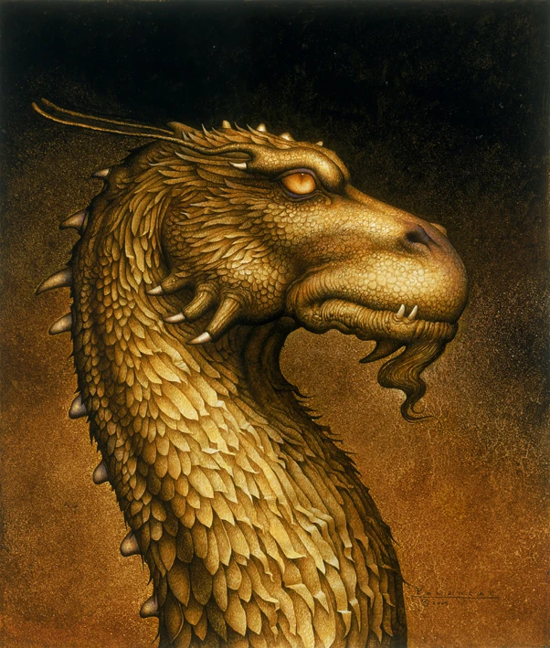
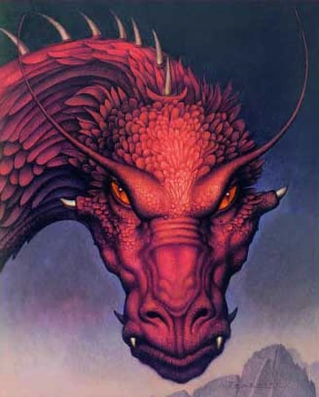
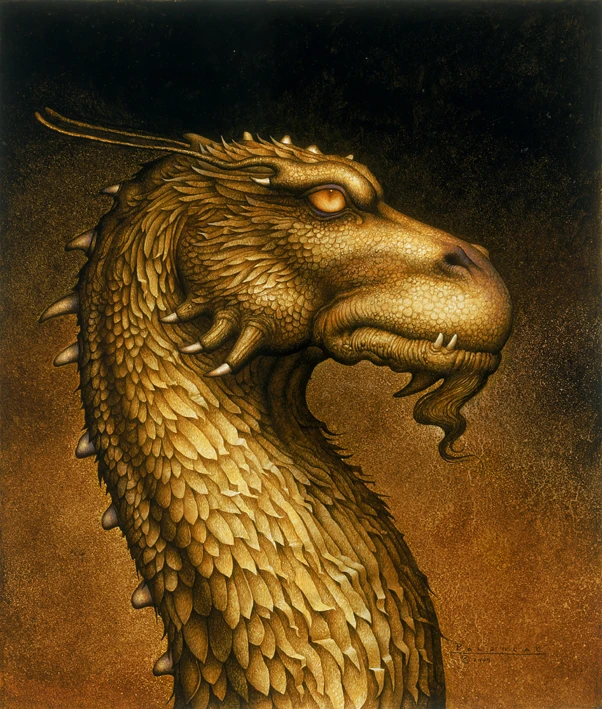

Aliya Hassan
  
  
Domia abr Wyrda: Dominance of Fate (book)
Du Eld Draumar: The Old Dreamers
Du Fells Nángoröth: The Blasted Mountains
Du Fyrn Skulblaka: The Dragon War
Du Gata Vrangr: The Wandering Path
Du Namar Aurboda: The Banishing of the Names
Du Súndavar Freohr: Death of the Shadows
Du Völlar Eldrvarya: The Burning Plains
Du Weldenvarden: The Guarding Forest
Sources: Ancient Language | Inheriwiki